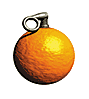
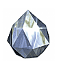
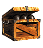
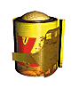

|
|
|||
|  | Oranges are sooo juicy they are ready to explode. Use them! |  | Crystal Coconuts unlock Cranky's potion potential. Stay well stocked! |
|  | Supply Crates contain five rounds of various types of ammunition. |  | Banana Camera Film is used to catch Banana Fairies on film, which unlocks special features in Mystery Mode. |